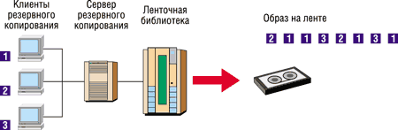

Олег Спиряев
Данные - один из главных корпоративных ресурсов. Их объем постоянно растет, а улучшение доступности и защиты данных стало сегодня одной из основных задач ИТ-отделов компаний. Главное требование - это наличие надежной инфраструктуры для восстановления, успешно работающей в условиях, когда "окно" резервного копирования и восстановления постоянно сокращается. Оптимальное решение этой задачи представляет собой серьезную проблему.
Использование дисковых систем для хранения резервных копий увеличивает скорость, обеспечивает быстрый доступ и более высокую надежность по сравнению с резервным копированием на ленту. Однако по стоимости хранения в расчете на терабайт ленточные библиотеки в несколько раз дешевле дисковых массивов, поэтому для локального хранения резервных копий по-прежнему чаще всего используется лента.
Относительно новой тенденцией стало использование массивов с ATA-дисками для временного хранения данных перед их записью на ленту. Но стоимость ATA RAID в расчете на 1 Гбайт по-прежнему в несколько раз выше, чем у ленточных библиотек. И хотя применение ATA RAID для кратковременного хранения реализует преимущества дисков в скорости резервного копирования, скорость восстановления при этом не улучшается, поскольку она зависит от производительности ленточных накопителей, а большую часть данных приходится перемещать с дорогих дисков на ленту через один-два дня.
По мнению ряда экспертов, оптимальное решение для восстановления данных по резервным копиям должно не только обеспечивать временное хранение, но и позволять хранить несколько версий резервных копий и задействовать при восстановлении возможности произвольного чтения диска. При этом стоимость решения, обладающего такими возможностями, должна быть сравнима со стоимостью ленты. Однако главное требование - это надежное восстановление с проверкой целостности данных.
Требования к системам хранения для восстановления данных
До недавнего времени высокие цены на жесткие диски делали экономически невыгодным их применение для хранения резервных копий. Методы защиты данных с использованием жестких дисков, такие, как репликация, применяются обычно для критически важных данных с максимальными требованиями к доступности и восстановлению, но даже в этом случае резервная копия данных сохраняется на ленте. Более того, для ведения архива и восстановления данных после ошибок пользователя или оператора (например, случайного удаления файлов) требуется сохранять резервные копии для нескольких версий данных, что в несколько раз увеличивает затраты.
В связи с падением цен на диски и появлением более экономичных дисковых массивов с накопителями ATA системы хранения данных для восстановления на базе дисков можно рассматривать как новый инструмент защиты данных с новым уровнем цен. Однако простое использование недорогих дисков в процессе управления восстановлением еще не означает более надежной защиты данных или оптимизации стоимости владения (TCO).
Как уже отмечалось, именно лента - де-факто главный носитель для хранения резервных копий. Увеличение емкости и производительности ленточных накопителей позволяет с небольшими затратами хранить несколько копий и версий. Будучи сменным накопителем, лента также позволяет хранить копии на удаленной площадке компании, например, для восстановления информации после катастроф. К сожалению, ленточные накопители имеют и серьезный недостаток - они в большей степени ориентированы на резервное копирование, а не на восстановление данных.
С учетом увеличения пропускной способности ленточных накопителей при резервном копировании необходимо тщательно настроить потоки данных, которые идут на ленточный привод, с тем чтобы устранить его износ из-за старт-стопных перемещений ленты. Инкрементальное резервное копирование еще сильнее усложняет эту проблему, поскольку при нем копируется слишком мало данных. Поэтому поддержание потока данных для записи обычно требует одновременного резервного копирования с нескольких клиентов (рис. 1). Такой процесс называют мультиплексированием. Мультиплексирование обеспечивает использование ленточных накопителей по максимуму, но замедляет процесс восстановления, поскольку из-за него требуется дополнительное время на чтение образов резервного копирования и пропуск данных, относящихся к другим клиентам резервного копирования.
|  |
| Рис. 1. Процесс мультиплексирования.
|
Однако главная проблема в случае ленты - это отсутствие механизма проверки качества резервных копий. Процесс резервного копирования может закончиться успешно, но при этом трудно убедиться в том, что данные со всех лент можно восстановить. Пусть даже найдется всего одна лента, с которой данные не читаются, но это может привести к тому, что, когда потребуется восстановить данные по резервной копии, вдруг окажется, что сделать это невозможно из-за ошибки записи.
Преимущества и проблемы дисков
Хранение на дисках имеет несколько преимуществ по сравнению с лентой. Во-первых, в отличие от ленточных накопителей, дисковым массивам не требуется стабильный поток данных - в них нет изнашивания механических компонентов даже при инкрементальном резервном копировании. Во-вторых, дисковые массивы упрощают и ускоряют весь процесс резервного копирования, поскольку системный администратор может чаще выполнять полное резервное копирование без потерь в производительности или увеличения риска неудачного восстановления. Несмотря на сокращение "окон" резервного копирования, частое резервное копирование позволяет уменьшить число лент, необходимых для восстановления, и упростить этот процесс. Дело в том, что при инкрементальном резервном копировании число лент, необходимых для восстановления, увеличивается, что удлиняет процесс восстановления и повышает риск того, что одну из лент не удастся прочитать. Использование дисков, таким образом, позволяет системному администратору оптимизировать процесс резервного копирования.
Диски также упрощают и делают более эффективным процесс восстановления с удаленных копий. Вместо мультиплексирования данных от нескольких клиентов на одну ленту копирование с диска на ленту позволяет напрямую получить резервные копии для каждого клиента, что ускоряет процесс восстановления. Кроме того, подобное копирование обеспечивает большую гибкость по сравнению с обычным копированием (с ленты на ленту). В последнем случае оба ленточных накопителя не могут использоваться для других операций резервного копирования или восстановления, в то время как диски обеспечивают параллельный доступ, позволяя выполнять резервное копирование и восстановление одновременно с копированием данных на ленту.
Более важно то, что диски великолепно подходят для восстановления по производительности и надежности. Такие технологии, как RAID, делают их существенно более надежными носителями по сравнению с лентой. Как говорилось выше, одна дефектная лента может сорвать весь процесс восстановления. При использовании защиты данных с помощью RAID восстановление продолжится и успешно завершится даже при сбое диска. Тут стоит отметить, что, хотя RAID намного надежнее ленты, сама по себе эта технология не способна обеспечить 100%-ную защиту. Более того, согласно опубликованным данным Strategic Research, 87% всех случаев восстановления связаны с восстановлением не всей системы, а одиночных файлов. А диск, будучи устройством с произвольным доступом, обеспечивает намного более быстрое восстановление одиночных файлов. Напомним, что среднее время доступа к данным на диске измеряется миллисекундами, а у ленты с ее последовательным доступом среднее время задержки при доступе к файлам может составлять от 20 до 70 с. К тому же, если для восстановления нужно найти ленту, вставить ее в накопитель и извлечь, то суммарное время доступа к данным еще больше увеличивается.
Несмотря на все эти преимущества, главным препятствием к использованию дисков для резервного копирования остается их сравнительно высокая стоимость. Даже при резком падении цен на диски лента по-прежнему - самый дешевый носитель. Допустим, что требуется хранить сделанные в течение четырех недель полные копии и ежедневные инкрементальные копии. Если принять размер инкрементальных копий равным примерно 5% основных данных, то для хранения резервных копий потребуется емкость, в пять раз превышающая размер основной системы хранения. Очевидно, что такую основную систему хранения, как EMC Symmetrix, нет смысла использовать для резервного копирования из-за слишком высокой стоимости. Даже дисковые массивы ATA RAID, у которых стоимость 1 Гбайт составляет 10-20 долл., намного дороже ленты, у которой этот показатель не превышает 5 долл.
Требования к оптимизации резервного копирования и восстановления
Оптимизированное решение для восстановления данных с помощью резервных копий должно сочетать преимущества лент и дисков и в то же время обеспечить улучшенную защиту данных за счет преодоления недостатков как лент, так и традиционных дисковых массивов. Рассмотрим лишь некоторые особые требования к решениям для восстановления с помощью резервных копий.
Высокая производительность как для резервного копирования, так и для восстановления. Сокращение "окна" и растущие объемы данных требуют высокой производительности резервного копирования. В то же время, поскольку данные становятся все более важными для каждодневных операций, требуется высокая скорость их восстановления. Поэтому специализированные системы хранения для резервного копирования должны обеспечить высокую производительность обеих операций.
Эффективное по затратам хранение. В идеале стоимость решения должна быть сравнима со стоимостью ленточных библиотек. Решение также должно обеспечивать возможность хранить резервные копии за несколько месяцев, что позволит быстро выполнять восстановление.
Проверка возможности восстановления и высоконадежное хранение. Не следует забывать, что цель резервного копирования - обеспечить восстановление данных в случае их потери на основной системе хранения. Даже после успешного завершения резервного копирования необходимо убедиться, что с помощью полученных копий можно восстановить исходные данные. Кроме того, для успешного восстановления оптимизированное решение должно реализовать более надежную защиту, чем традиционные RAID- и файловые системы.
Простота использования и интеграция в существующие стандартные операции восстановления. По данным Gartner Group, расходы на резервное копирование и восстановление составляют самую большую долю совокупной стоимости владения (TCO), равную 30% (рис. 2). Сегодня все чаще от ИТ-отделов требуется сделать больше меньшими силами. Оптимизированное решение для восстановления должно упростить процессы резервного копирования и восстановления и позволить ИТ-отделам задействовать существующие инвестиции, используя стандартные интерфейсы.
| Рис. 2. ТСО хранения.
|
Технология Data Domain DD200
Начинающая американская компания Data Domain (http://www.datadomain.com) выпустила сетевое устройство на основе дисковых накопителей (Disk-base Recovery Appliance), которое, как утверждается, существенно ускоряет процессы резервирования и восстановления данных по сравнению с ленточными устройствами. Кстати, эксперты Storage Magazine и SearchStorage.com назвали в 2003 г. это устройство "продуктом года" в категории Backup Hardware.
Хотя в DD200 использованы жесткие диски ATA, это не просто еще один недорогой дисковый массив с RAID. Отличие заключается в том, что это устройство использует ПО Restore Protection Manager (RPM). Это ПО выполняет компрессию данных, получаемых от распространенных систем резервного копирования (степень компрессии - до 20 раз). По мере необходимости сжатые данные отправляются на архивацию и долговременное хранение с применением систем резервирования от Veritas Software или EMC/Legato Systems. RPM обеспечивает высокий уровень защиты данных при стоимости хранения 1 Гбайт на уровне ленточных библиотек, что намного меньше, чем у обычных ATA RAID. С самого начала это устройство (рис. 3) разрабатывалось специально для резервного копирования и восстановления данных.
| Рис. 3. Внешний вид DD200.
|
Пропускная способность DD200 превышает 150 Гбайт/ч, что примерно соответствует показателям современных ленточных накопителей SDLT и LTO и многих основных систем хранения. Однако, в отличие от ленточных накопителей, для DD200 неактуально требование обеспечить постоянные потоки данных для получения максимальной производительности резервного копирования. На один и тот же DD200 можно посылать с разной скоростью несколько потоков данных для резервного копирования. Устройство также позволяет быстро восстанавливать одиночные файлы за счет выборочного чтения с жесткого диска.
Для снижения стоимости хранения в новом устройстве применяется технология Global Compression. RPM значительно сокращает емкость, необходимую для хранения резервных копий, за счет объединения в пул одинаковых компонентов разных образов данных для восстановления и сохранения только уникальных данных. Это позволяет DD200 обнаружить и устранить хранение не только дубликатов файлов, но и повторяющихся элементов разных файлов. Благодаря технологии Global Compression RPM реализует реальное сжатие с коэффициентом 20:1 при хранении в течение длительного времени. В результате DD200 на порядок меньше, проще в управлении и работе по сравнению с другими системами на базе ATA, используемыми для резервного копирования.
Архитектура Data Invulnerability Architecture обеспечивает проверку возможности восстановления и самоизлечения данных. DD200 предназначено для предотвращения, обнаружения и исправления сбоев оборудования и ПО, приводящих к нарушению целостности данных и невозможности успешного восстановления. Файловая система RPM и используемая схема RAID спроектированы специально для обеспечения защиты от сбоев, обнаружения и исправления программных сбоев и ошибок дисков.
Устройство просто в использовании и интегрируется в уже существующую программную среду резервного копирования (рис. 4). Для администратора, отвечающего за резервное копирование, DD200 представляет собой обычный файл-сервер с несложным администрированием. Устройство поддерживает стандарты ПО и ведущие продукты для резервного копирования и восстановления. DD200 даже повышает надежность некоторых функций этих продуктов, которым часто уделяется недостаточно внимания, например, инициируемого пользователем восстановления файлов.
| Рис. 4. Конфигурация системы хранения с DD200.
|
Производительность
Как отмечают разработчики, производительность DD200 примерно соответствует показателям лучших систем ATA RAID, используемых для резервного копирования/восстановления. В отличие от ленточных накопителей DD200 не требует от серверов резервного копирования обеспечить пересылку данных с постоянной скоростью, чтобы добиться максимальной производительности. При использовании ленточных накопителей мультиплексирование служит для компенсации "медленных" клиентов, нескольких медленных сетей и непродолжительного резервного копирования (например, инкрементального резервного копирования). При работе с DD200 несколько потоков данных для резервного копирования могут одновременно пересылаться на одно устройство. Для повышения производительности в конфигурацию резервного копирования можно добавить несколько устройств DD200.
Считается, что преимущества DD200 особенно ярко проявляются в производительности восстановления. Допустим, есть схема резервного копирования, по которой полная копия делается раз в неделю по субботам, а ежедневно выполняется инкрементальное резервное копирование. Если используются ленточные накопители, для полного восстановления утром в пятницу понадобится прочитать все ленты, поочередно загружая и извлекая их. Если нужной ленты для восстановления в библиотеке нет, ее поиск может занять несколько часов. Мультиплексирование еще заметнее снижает производительность, поскольку из-за него при чтении ленты приходится пропускать данные, относящиеся к другим клиентам резервного копирования. С другой стороны, DD200 может со стабильно высокой производительностью реагировать на запросы на считывание нужных для восстановления образов, которые поступают от ПО резервного копирования, независимо от того, насколько эти образы рассредоточены.
Можно привести в пример и другой, более частый случай, когда утром в пятницу требуется восстановить только несколько файлов. Если используются ленточные накопители, даже для частичного восстановления может потребоваться несколько лент. Как и в предыдущем случае, операция восстановления продолжается значительно дольше, если нужных лент нет в библиотеке. С учетом среднего времени доступа к файлу и загрузки кассеты нужные файлы начинают читаться только через несколько минут. При использовании DD200 это время сокращается до нескольких миллисекунд. За счет возможности произвольного чтения с жесткого диска DD200 обеспечивает более быстрое восстановление по сравнению с лентой.
Поскольку устройство DD200 может хранить резервные копии за несколько месяцев, большинство операций восстановления выполняются непосредственно с него. В этом заключается основная разница между DD200 и промежуточным хранением на диске. В некоторых системах резервного копирования диски используются как кэш-память для ленты. При такой схеме резервная копия сначала записывается на диск и там временно хранится. После переписывания на ленту она удаляется с диска. Тем самым используются преимущества диска для улучшения производительности резервного копирования. Но для восстановления по-прежнему требуется лента, и в результате эта операция замедляется из-за поиска, загрузки и поочередного чтения нужного набора лент.
Делать резервные копии на ленте для удаленного хранения с помощью DD200 намного проще и быстрее. При копировании данных на ленту для удаленного или долговременного хранения DD200 работает быстро и обеспечивает поток данных, достаточный для того, чтобы даже лучшие ленточные накопители могли работать с максимальной производительностью. Кроме того, DD200 обеспечивает дополнительную гибкость резервного копирования и восстановления. Когда идет копирование данных на ленту, устройство доступно для резервного копирования или восстановления. В то же время, если в ходе копирования на ленту из ленточной библиотеки потребуется восстановить файл, то процесс копирования придется прервать.
Таким образом, сочетая высокую пропускную способность, возможность хранения сделанных в течение нескольких недель резервных копий и произвольного чтения, DD200 улучшает производительность всего процесса резервного копирования и восстановления.
Компрессия данных
Образы для восстановления содержат много дублирующих друг друга данных, и это становится особенно заметно при сравнении полных резервных копий, сделанных за несколько недель. Хотя при инкрементальном резервном копировании записываются только измененные файлы, они также могут содержать блоки, которые не изменились со времени предыдущего резервного копирования.
Используемый в RPM алгоритм сжатия без потери данных Global Compression объединяет избыточные данные резервных копий и сохраняет только уникальные данные. Когда данные записываются на DD200, они разбиваются на сегменты (последовательности байтов) переменной длины. RPM сравнивает каждый новый сегмент со всеми ранее записанными сегментами. Такой процесс гарантирует, что каждый уникальный сегмент будет сохранен только один раз. ПО способно обнаружить дублирующие друг друга файлы, повторяющиеся элементы в разных файлах и блоках. В результате объем резервной копии оказывается на порядок меньше, чем объем исходных данных.
Ключ к эффективности Global Compression заключается в независимости этого алгоритма от формата данных. Алгоритм основывается только на содержимом данных и их повторяющихся элементов. Он может применяться к повторяющимся структурированным (например, базам данных) и неструктурированным (например, текстовым файлам) данным. Кроме того, он может применяться к данным, хранящимся в файловой системе и в неформатированных томах. Благодаря алгоритму Global Compression RPM реализует высокоэффективное хранение резервных копий данных любого формата.
Коэффициент сжатия
Алгоритм Global Compression анализирует все данные, хранящиеся на DD200, независимо от их формата и расположения. Эффект сжатия увеличивается по мере того, как объем хранимых данных растет. По имеющимся данным, за четырехнедельный период хранения коэффициент сжатия может достичь 10:1 (рис. 5) при полном резервном копировании раз в неделю и ежедневном инкрементальном резервном копировании на уровне файлов. За восемь недель ожидаемый коэффициент сжатия составит 14:1, а примерно через 20 недель - 20:1. Data Domain подтвердила эти результаты в нескольких центрах обработки данных. Алгоритм Global Compression применялся к различным типам данных, включая базы данных, текстовые файлы, двоичные файлы Unix и приложения для ПК, документы Microsoft Exchange и Microsoft Office.
| Рис. 5. Коэффициент сжатия для Global Compression.
|
Коэффициент сжатия зависит и от самих резервных копий. Если в резервной копии много одинаковых или похожих файлов (так бывает, когда файл копируется несколько раз, после чего в него вносятся небольшие изменения), то эффект от Global Compression будет максимальным. Имеются некоторые типы неповторяющихся данных, для которых эффект от применения этого алгоритма сжатия не будет столь значителен, - это, например, данные, полученные с помощью сейсмической разведки, и данные спутниковой телеметрии со статичным двоичным образом. Если в данных отсутствует избыточность, то подход RPM все равно обеспечивает больший коэффициент сжатия по сравнению с другими универсальными алгоритмами сжатия или устранения дублирования файлов.
Файловая система
По информации Data Domain, файловая система RPM намного проще большинства корпоративных файловых систем, что сводит к минимуму вероятность ошибки. Большинство файловых систем оптимизированы в расчете на выборочное обновление блоков и небольшое запаздывание. Структуры данных с такими характеристиками слишком сложны и не защищают от нарушения целостности данных. Этими структурами (например, указателями адресов блоков, растровыми изображениями и счетчиками связей) трудно управлять, особенно при возникновении ошибок в системе. Из-за сложности ПО ошибки крайне трудно обнаружить.
RPM построена по совершенно другому принципу. Файлы для восстановления, как правило, очень большие и передаются целиком. Обычно ПО резервного копирования их не модифицирует; они записываются, считываются и удаляются. RPM разработана специально с учетом требований ПО резервного копирования и поэтому способна реализовать уровень хранения значительно проще и надежнее обычных первичных систем хранения.
RPM записывает данные, занося сведения о них в последовательный журнал регистрации. После записи блока его нельзя обновить или перезаписать до завершения формальной команды clean (используемые блоки безопасно перемещаются в конец журнала регистрации, освобождаются только те блоки, которые не используются файлами после того, как их удалило ПО резервного копирования). Это означает, что RPM не может по ошибке удалить правильные данные - они в безопасности с того момента, как записаны на диске.
За счет устранения сложной структуры данных RPM также способна обеспечить более надежную онлайновую файловую систему и проверку целостности данных, что уменьшает общий риск ошибки. Если в обычной файловой системе указатель получает команду извлечь данные из блока #82, то именно туда направляется запрос. При этом не имеет значения, что указатель сделал ошибку и на самом деле нужен блок #84, - обычная файловая система не способна проводить проверку в онлайновом режиме. RPM организует более простой доступ к данным, и они повторно проверяются при чтении, поэтому невозможна описанная выше ситуация.
Кроме того, RPM предлагает оперативный подход к обеспечению целостности. В течение нескольких часов после резервного копирования выполняется проверка целостности как данных, так и файловой системы. Если будет обнаружена ошибка на уровне диска, то RPM может исправить программную ошибку, используя данные из зеркала блока и заново отображая неправильный блок. После начальной проверки данных резервной копии RPM также в фоновом режиме проводит проверку данных с помощью короткой контрольной суммы. Например, для каждого поддерживающего контроль ECC жесткого диска DD200 однобитовая ошибка может возникнуть при записи на него 1 Пбайт данных; проверка контрольной суммы RPM работает в триллион раз надежнее.
Благодаря такой защите вероятность возникновения ошибки в данных намного меньше, когда они записаны в DD200, чем до этой операции. Однако все же рекомендуется периодически проводить проверки резервных копий с точки зрения ПО резервного копирования и приложений. Поскольку DD200 использует диски, то такие проверки выполняются намного проще, чем проверки резервных копий, хранящихся в ленточных библиотеках.
Основные методы защиты данных
DD200 применяет все традиционные технологии защиты данных, включая RAID 1+0 (зеркалированные тома), энергонезависимую кэш-память, механизмы целостности данных и быстрое восстановление зеркала после сбоя системы.
Как известно, RAID 1+0 признан механизмом RAID, обеспечивающим максимальную производительность и скорость повторного построения диска после сбоев. Данный алгоритм реализован не аппаратно, а на уровне RPM, и поддерживает фоновую проверку четности для устранения программных ошибок, накапливающихся с течением времени. Если появится дефектный блок, то система будет знать, какое из зеркал правильное, и с его помощью исправит ошибку в неверной копии. Полная процедура повторного построения диска DD200 длится чуть больше часа.
По имеющейся информации, в будущем как опция будет предлагаться RAID с оптимизированной четностью, что увеличивает полезную емкость и даст DD200 еще большие преимущества по показателю цена/производительность.
Подтверждения NFS V3 возвращаются после сохранения данных RPM в энергонезависимой кэш-памяти, снабженной отдельным аккумулятором. Поэтому если произойдет сбой питания, а запросы записи на тот момент не дошли до диска, то для восстановления нужно только заново выполнить те же запросы. При этом происходит повторная проверка и тем самым преодолевается незащищенность кэш-памяти ATA-массива от сбоев питания. Никакие обновления метаданных не записываются на диск до тех пор, пока не будут записаны все данные, поэтому в случае сбоя энергонезависимой памяти целостности данных ничто не угрожает. При ее сбое теряются только самые последние запросы записи, а целостность всей остальной системы не нарушается. Для уменьшения до минимума объема энергонезависимой памяти в нее записываются только данные после сжатия.
Если во время записи на диск произошел сбой системы или отключилось питание, то операции записи на одну сторону зеркала будут успешно завершены, а на другую закончатся неудачно. Когда работоспособность системы будет восстановлена, то стороны зеркала окажутся неидентичными. Для восстановления система должна идентифицировать неидентичные блоки и сделать их идентичными. Проблема заключается в том, что если неизвестно, какие блоки записывались в момент сбоя, то придется восстанавливать все диски, а если емкость системы составляет несколько терабайт, то этот процесс длится очень долго.
RPM сохраняет список незаконченных операций записи в энергонезависимой памяти. После сбоя зеркало может восстановить диск и по нему восстановить только те блоки, которые могут быть неидентичны, поэтому потребуется восстанавливать не терабайты, а несколько сотен килобайт.
В ПО резервного копирования эффективно решена проблема сбоев ленточных приводов, оно способно оповещать о них оператора и инициировать перезапуск. Администраторы резервного копирования также хорошо знают, какие действия нужно предпринимать в таких ситуациях.
DD200 работает заметно надежнее ленточных устройств. В большинстве случаев устройство способно обнаружить проблему, исправить ее и продолжить резервное копирование. В маловероятных случаях возникновения критичной проблемы ее последствия будут не более серьезными, чем при сбое ленточного привода. Для всех данных, полученных к моменту такого критичного отказа, обеспечивается целостность, но может потребоваться запустить заново процесс резервного копирования. В отличие от первичных систем хранения, используемых для резервного копирования, в этом устройстве невозможно не заметить потери данных - благодаря полной проверке целостности оператор получает полные отчеты о состоянии данных.
Предполагается, что в большинстве случаев, когда нужно обеспечить максимальную защиту данных, ПО резервного копирования делает копии на ленте для хранения на удаленной площадке в соответствии с требованиями уровня сервиса. DD200 поддерживает эту функцию во всех основных пакетах резервного копирования.
Поскольку DD200 полностью поддерживает основные программные пакеты резервного копирования, не требуется выстраивать конфигурации специально для DD200, а можно использовать принятые в организации в качестве стандартов продукты резервного копирования.